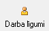

Slodzes¶
Tā kā Algu aprēķins sistēmā tiek veikts pa slodzēm, strādājošajam nepieciešams izveidot slodzi. Slodze tiek piesaistīta noteiktai struktūrvienībai, tādejādi nodrošinot algu datu sadalījumu pa uzņēmuma struktūrvienībām.
Slodzē tiek saglabāta informācija par strādājošā Amatu , Profesijas kodu . Darba laika uzskaitei jānorāda izmantojamais kalendārs. Standarta kalendārs ir konfigurējams, kur var noteikt, ka piemēram, pilns darba laiks ir 5 darba dienas nedēļā, 8 stundas dienā. No strādājošā slodzes var atvērt strādājošajam izveidotos Nodokļu dokumentus , rīkojumus , algu aprēķinu un kalendāru . Lai atvērtu strādājošā slodzi, jāizvēlas strādājošais un rīku joslā jānospiež poga .. image:: images_ozols/25603.png
- scale
100%
.
Slodzes var pievienot rīku joslā nospiežot pogu .. image:: images_ozols/25605.png
- scale
100%
un izvēloties strādājošo, vai strādājošā aprakstā caur pogu
{kind=link}
:
{kind=link}
Slodze uz: datums;
Persona: strādājošais ;
Uzņēmums: ja ir vairāki uzņēmumi, tad jānorāda to, kurā strādā šis strādājošais;
Pieņemts darbā_ ar rīkojumu: datums, kurā strādājošais tiek pieņemts darbā, un rīkojums ;
Struktūrv.: struktūrvienība, kurā strādā šis strādājošais;
Amats: strādājošā amats;
Slodzes veids: slodzes veids no slodžu saraksta ;
Pers.kategorija: personāla kategorija no saraksta;
Kalendārs: kalendārs no saraksta;
Atvaļin.kalendārs: atvaļinājuma kalendārs no saraksta;
Neizm. atv.dienas: neizmantotās atvaļinājuma dienas( tiek lietotas atvaļinājuma rezerves aprēķinā );
Nodokļu dok.: strādājošā nodokļu dokuments;

Nodokļu dokumentu jāpievieno obligāti, pretējā gadījumā nebūs iespējams veikt algas aprēķinu .
Stājas spēkā: no kura datuma stājas spēka;
Atlaists_ ar rīkojumu: atlaišanas datums un rīkojums.
Caur pogu
{kind=link}
tiek pievienoti vai atvērti rīkojumi. Rīkojumui tiek saglabāti:doc:` rīkojumu žurnālā<209>` . Rikojums obligāti jāapstiprina.
Caur pogu
{kind=link}
tiek pievienoti vai atvērti nodokļu dokumenti. Pievienojot nodokļu dokumentu, ir iespējams izvēlēties tā veidu:
{kind=link}
Caur pogu
{kind=link}
tiek pievienoti vai atvērti darba līgumi. Lai pievienotu līgumu, rīku joslā jānospiež poga

, jāaizpilda saturs un jāsaglabā līgums, nospiežot pogu .. image:: images_ozols/25621.png
- scale
100%
. Visi pievienotie darba līgumi tiek saglabāti darba līgumu žurnālā .
Caur pogu
{kind=link}
iespējams atvērt vai pievienot algu tarifikāciju.
Caur pogu
{kind=link}
iespējams redzē visus izvēlētās slodzes pārskaitījumums.
Caur pogu
{kind=link}
tiek atvērts darba laika uzskaites tabele.
Caur pogu
{kind=link}
tiek atvērts algas aprēķins.
Caur pogu
{kind=link}
tiek atvērts izvēlētas slodzes personīgais konts, kur iespējams sagatavot dažādas izdrukas.